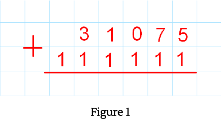
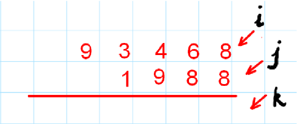
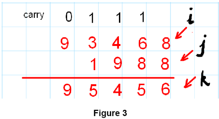

SUM OF 2 ARRAYS
Hey coder ! We are here to help you and be your coding buddy. Let’s go through the step by step explanation of this question together. This is going to be one hell of a ride!
Problem Discussion:
Let us guide you through the given problem.
You are given 2 numbers in the form of arrays.
Now we know what mischief must be cooking in your mind.
Reader, suppose we are given the following input : 31075 and 111111 , then notice the places of the digits when adding :
No, converting
arrays into numbers and adding them is not possible as the length of arrays
can be very lengthy.
Reader, suppose we are given the following input : 31075 and 111111 , then notice the places of the digits when adding :

We also suggest you watch the question video to understand it better.
Approach:
For the explanation we take the two numbers as 93468 and 1988 .We declare a
new array (say sum[ ]) whose length is the larger of the two input array
lengths.
 We put pointers i, j and k and the last place of all the arrays.
In the first iteration, we add the values at i and j and store (i + j) %10 in k. Then we take (i + j) / 10 in carry (denoted by ‘c’) and decrease i , j and k by one place for all the subsequent iterations as follows:
 In the first iteration, we add the values at i and j and store (i + j) %10 in k. Then we take (i + j) / 10 in carry (denoted by ‘c’) and decrease i , j and k by one place for all the subsequent iterations as follows:
When j pointer reaches -1 position , we add only value at i and value of carry
and store it in the kth position of the sum array.
Now reader, in case the carry at last position of i (i.e at 9) was 1 , then the sum would have been 10. So, in such a case we print ‘1’ by itself, store ‘0’ at kth position and then print the entire sum array.
We highly recommend you to refer to Youtube video Sum of two arrays[0:46- 3:19] for detailed explanation .
Now reader, in case the carry at last position of i (i.e at 9) was 1 , then the sum would have been 10. So, in such a case we print ‘1’ by itself, store ‘0’ at kth position and then print the entire sum array.
We highly recommend you to refer to Youtube video Sum of two arrays[0:46- 3:19] for detailed explanation .
Source Code:
Java Code
import java.io.*;
import java.util.*;
public class Main {
public static void main(String[] args) throws Exception {
Scanner scn = new Scanner(System.in);
int n1 = scn.nextInt();
int[] a1 = new int[n1];
for (int i = 0; i < n1; i++) {
a1[i] = scn.nextInt();
}
int n2 = scn.nextInt();
int[] a2 = new int[n2];
for (int i = 0; i < n2; i++) {
a2[i] = scn.nextInt();
}
int n;
if (n1 > n2) {
n = n1;
} else {
n = n2;
}
int i = n1 - 1, j = n2 - 1;
int[] sum = new int[n];
int carry = 0; //1
int k = n - 1; //2
while (k >= 0) {
int d = carry; //3
if (i >= 0) { //4
d += a1[i];
}
if (j >= 0) { //5
d += a2[j];
}
carry = d / 10; //6
d = d % 10; //7
sum[k] = d; //8
i--;
j--; //9
k--;
}
if (carry != 0) {
System.out.print(carry);
}
for (int y = 0; y < n; y++) {
System.out.println(sum[y]);
}
}
}
Time & Space Complexity:
- Time Complexity: O(n)
- Space Complexity: O(n)
This time complexity is linear because for and while loops are used.
As a 1D array is used in the code, therefore space complexity is constant.
Analysis:
Your patience has been much valued. Let’s discuss the “WHY” aspect of this
question now.
Be attentive ! The most important part of this article awaits you.
We can’t stress you enough to refer to the Youtube video [5:30 -9:20].
Be attentive ! The most important part of this article awaits you.
- 1 Initial value of carry is kept 0 and it changes in each iteration.
- 2 We iterate this code for k>=0 so that all positions of sum[ ] are filled.
- 3 Reader, here, ‘d ‘ denotes the digit which is to be placed at kth position in sum[ ]. We initialize it with the value stored in carry.
- 4 If i is at a non-negative position (i.e some part of the number is still left to be added) then the value at i is added to the previous value of ‘d’.
- 5 Similarly, if j is non-negative then the value of j is also added to the previous value of ‘d’.
- 6 As discussed previously , carry is updated as carry=d/10 and stores the ten’s place value of ‘d’ .
- 7 Also the digit, ‘d’ is updated to d=d%10 to store the one’s place value of ‘d’.
- 8 You need to store ‘d’ in the kth position of the sum[ ] array now.
- 9 At last , decrement the values of i , j and k .
We can’t stress you enough to refer to the Youtube video [5:30 -9:20].
Problem Tag: 1D Arrays
Author: Shreeya Gupta